# HACK WD FOR LOCAL RUNNING?# imac = "/Users/amyraefox/Code/SGC-Scaffolding_Graph_Comprehension/SGC-X/ANALYSIS/MAIN"# mbp = "/Users/amyfox/Sites/RESEARCH/SGC—Scaffolding Graph Comprehension/SGC-X/ANALYSIS/MAIN"# setwd(mbp)#IMPORT SUBJECTS sgc3a<-read_rds("analysis/SGC3A/data/2-scored-data/sgc3a_scored_participants.rds")%>%mutate(
study ="SGC3A")#%>% dplyr::select(-absolute_score)sgc3b<-read_rds("analysis/SGC3B/data/2-scored-data/sgc3b_scored_participants.rds")%>%mutate(
study ="SGC3B")#%>% dplyr::select(-absolute_score)sgc4a<-read_rds("analysis/SGC4A/data/2-scored-data/sgc4a_scored_participants.rds")%>%mutate(
study ="SGC4A",
pretty_mode ="online-replication")sgc4b<-read_rds("analysis/SGC4B/data/2-scored-data/sgc4b_scored_participants.rds")%>%mutate(
study ="SGC4B",
pretty_mode ="online-replication")# TEMPORARY ONLY REPLACE WITH SCORED DATA sgc4c<-read_rds("analysis/SGC4C/data/0-session-level/sgc4c_participants.rds")%>%mutate(
pretty_mode ="online-replication")sgc5<-read_rds("analysis/SGC5A/data/2-scored-data/sgc5_scored_participants.rds")%>%mutate(
study ="SGC5A",
pretty_mode ="online-replication")%>%dplyr::select(-absolute_score)#COMPARE DF COLUMNS# janitor::compare_df_cols(sgc3a, sgc3b, sgc4a, sgc4b, sgc5)#SGC5 HAS ABSOLUTE SCORE BUT THEY SHOULDN'T #MERGE df_subjects<-rbind(sgc3a, sgc3b, sgc4a, sgc4b, sgc5)#IMPORT OSPAN DATA ospan<-read_csv("analysis/combined/data/fall21_scored_ospan.csv")%>%mutate(
subject =SUBJECTID)#MERGE OSPAN DATA WITH SGC DATA df_ospan<-df_subjects%>%filter(subject%in%ospan$subject)df_ospan<-merge(df_ospan, ospan)#RENAME for reusedf_all<-df_subjects# df_subjects <- df_ospan#RECODE other study control conditions to CONTROLdf<-df_all%>%mutate(
pretty_condition =recode_factor(pretty_condition, "Orth-Full"="control",
"point"="control"))#CLEANUP# rm(ospan, sgc3a, sgc4a, sgc4b, sgc5, df_ospan)temp<-df_all%>%dplyr::select(s_NABS, condition, study, subject)%>%rename(score =s_NABS)temp2<-sgc4c%>%dplyr::select(absolute_score, condition, study, subject)%>%rename(score ="absolute_score")df<-rbind(temp, temp2)
#get list of unique subjects u<-df%>%dplyr::select(subject)%>%distinct()d<-df$subject%nin%u$subject#unique subjectsu<-unique(df$subject)#duplicated subjectsd<-df$subject[duplicated(df$subject)]length(d)
Warning: package 'ggdist' was built under R version 4.1.2
Attaching package: 'ggdist'
The following objects are masked from 'package:ggridges':
scale_point_color_continuous, scale_point_color_discrete,
scale_point_colour_continuous, scale_point_colour_discrete,
scale_point_fill_continuous, scale_point_fill_discrete,
scale_point_size_continuous
CODE
gf_boxplot(s_NABS~pretty_condition, color =~pretty_condition, data =df_all)+labs(title ="Distribution of ABSOLUTE Score by Condition")
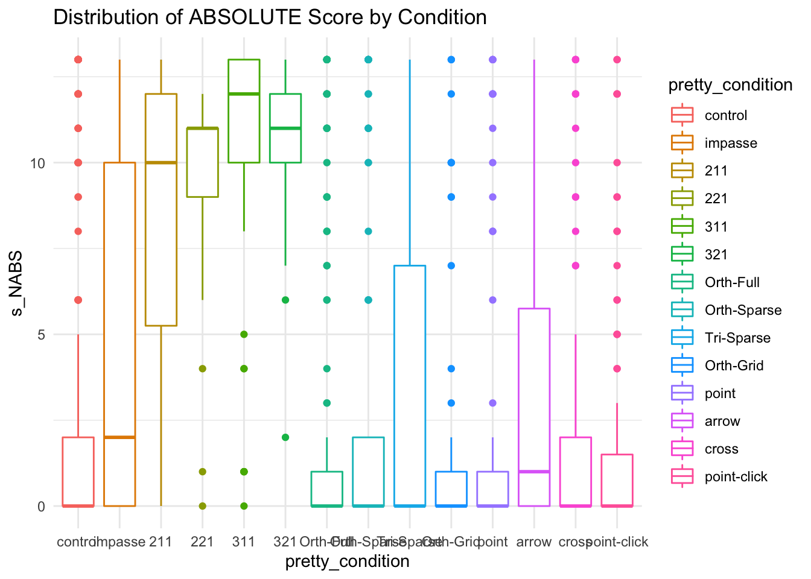
CODE
gf_boxplot(s_SCALED~pretty_condition, color =~pretty_condition, data =df_all)+labs(title ="Distribution of SCALED Score by Condition")
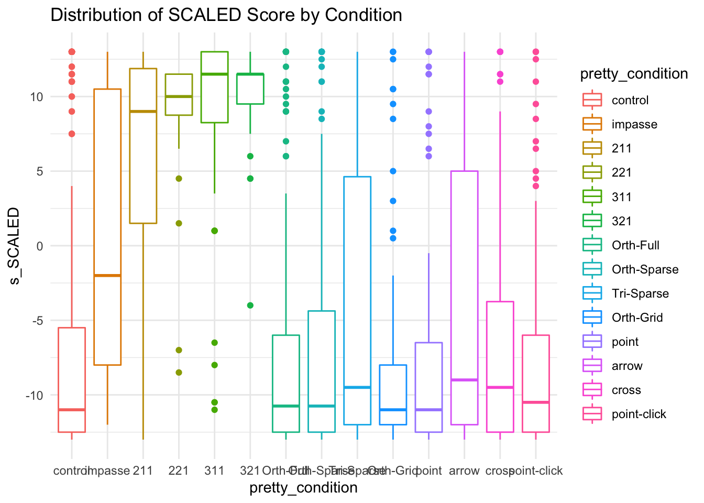
CODE
#GGDIST HALFEYEggplot(df_all, aes(y =pretty_condition, x =s_NABS,
fill =pretty_condition))+ggdist::stat_halfeye(
point_interval ="mean_qi"# side = "left",# justification = 1.1,# width = 1, # point_colour = NA)+labs(
title ="Distribution of Absolute Score by Condition",
x ="Total Absolute Score")+theme(legend.position ="blank")
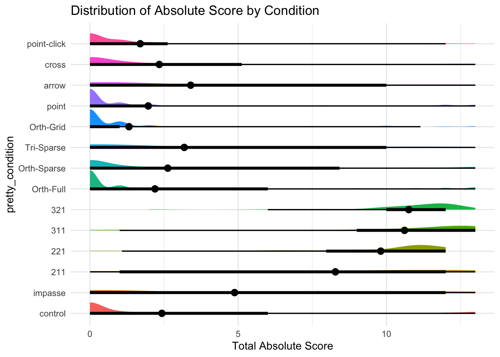
CODE
#DENSITY RIDGES BINLINEggplot(df_all, aes(x =DV_percent_NABS, y =pretty_condition, height=stat(density)))+# geom_density_ridges( stat = "density",alpha = 0.7)geom_density_ridges( alpha =0.7, stat ="binline", bins =20, scale =0.75, draw_baseline =FALSE)+labs(title ="Distribution of ABSOLUTE Score by Condition")
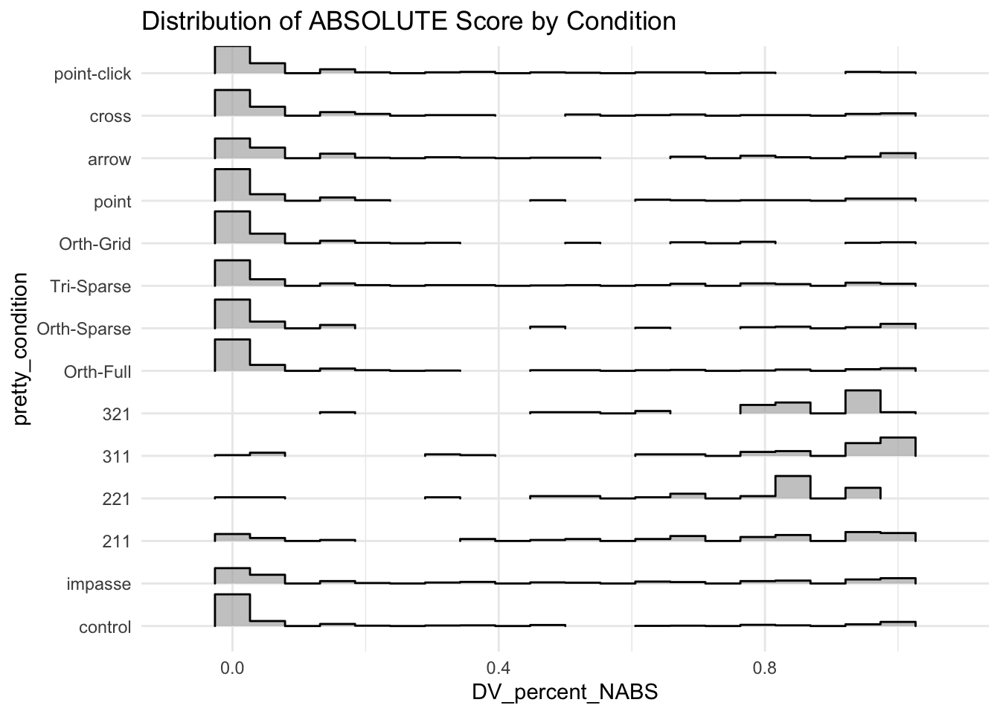
CODE
#DENSITY RIDGES SMOOTHggplot(df_all, aes(x =DV_percent_NABS, y =pretty_condition, fill=pretty_condition))+xlim(0,1)+stat_density_ridges( scale =0.75, stat ="density", jittered_points =TRUE,
position =position_points_jitter(width =0.05, height =0),
point_shape ='|', point_size =2, point_alpha =1, alpha =0.7)+labs(title ="Distribution of ABSOLUTE Score by Condition")
Warning: Ignoring unknown parameters: stat
Picking joint bandwidth of 0.0623
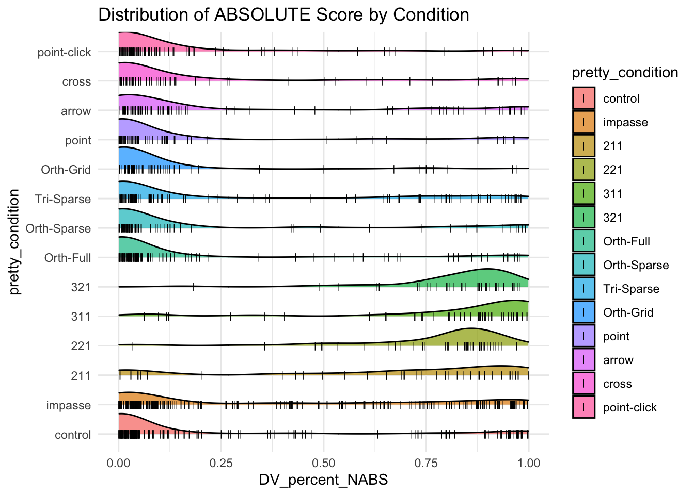
RESPONSE ACCURACY
Subject Level Scores
Subject level scores summarize the the response accuracy by a particular participant across all discriminant items in the graph comprehension task.
Absolute Score
CODE
#GGFORMULA | DENSITY HISTOGRAM SUBJECT TOTAL ABSOLUTEgf_props(~s_NABS, data =df_all)+labs(x ="number of correct responses ",
y ="% of subjects",
title ="Distribution of Absolute Score ",
subtitle ="Modes at high and low ends of scale suggest concentration of high (vs) low understanding")
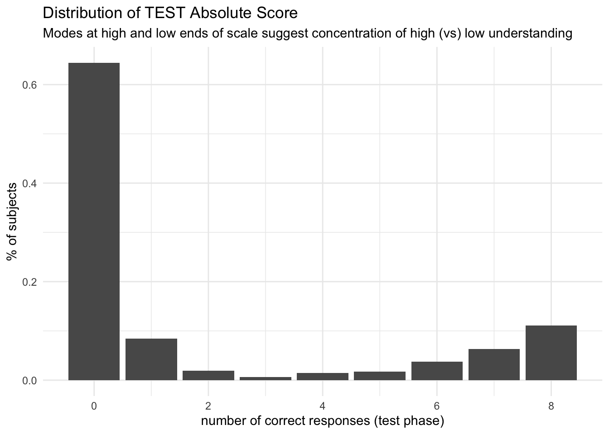
CODE
##GGPUBR | HIST+DENSITY SCORE BY CONDITION/MODEp<-gghistogram(df_all, x ="s_NABS", binwidth =0.5,
add ="mean", rug =TRUE,
fill ="pretty_condition", #, palette = c("#00AFBB", "#E7B800"),
add_density =TRUE)facet(p, facet.by=c("pretty_condition"))+labs( title ="Distribution of Absolute Score",
subtitle ="Pattern of response is similar across data collection modes but differs by condition",
x ="Total Absolute Score", y ="number of subjects")+theme_minimal()+theme(legend.position ="blank")
CODE
##VERTICAL RAINCLOUD USING GGDISTRggplot(df_all, aes(x =pretty_condition, y =s_NABS,
fill =pretty_condition))+ggdist::stat_halfeye(
side ="left",
justification =1.1,
width =1,
point_colour =NA)+geom_boxplot(
inherit.aes =FALSE, #supress fill
mapping =aes(x=pretty_condition, y =s_NABS),
width =.15,
outlier.shape =NA)+geom_point(
inherit.aes =FALSE, #supress fill
mapping =aes(x=pretty_condition, y =s_NABS, color =pretty_condition),
size =1.3,
alpha =.3,
position =position_jitter(
seed =1, width =.05))+labs(
title ="Distribution of Absolute Score ",
x ="Condition", y ="Total Absolute Score")+theme(legend.position ="blank")+coord_cartesian(xlim =c(0.5, NA), clip ="off")
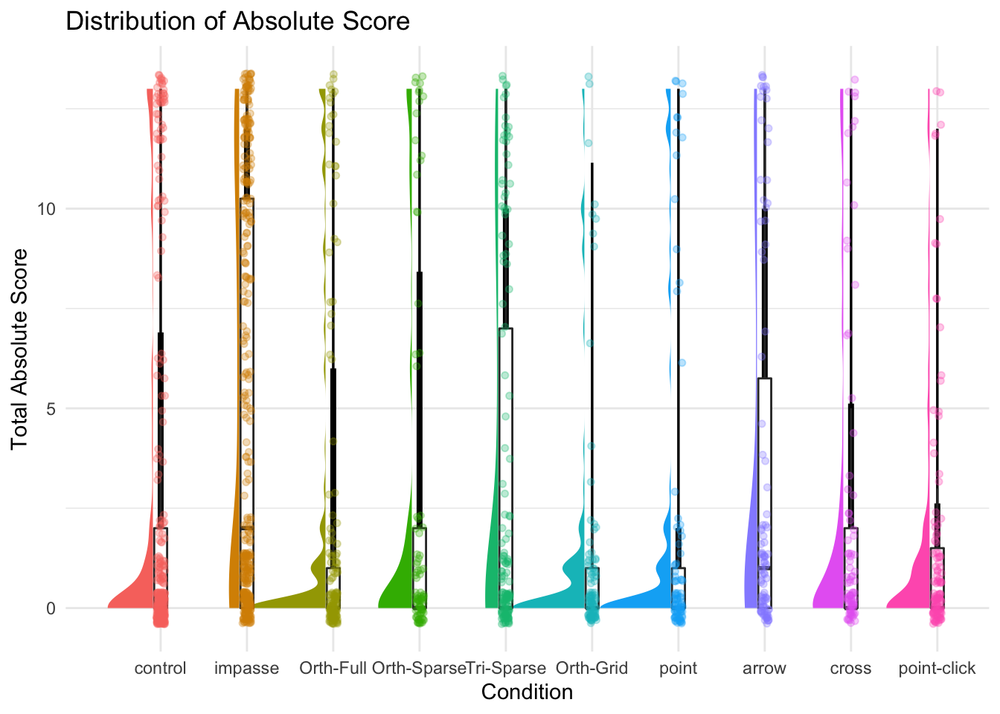
CODE
#PLOT EMPIRICIAL CUMULATIVE DISTRIBUTION FUNCTIONggplot(data =df_all, aes(item_test_NABS))+stat_ecdf(geom ="step")+facet_wrap(pretty_condition~.)+labs( title ="Empirical Cumulative Density Function — Absolute Score ",
x ="Total Absolute Score [0,13]",
y ="Cumulative Probability")
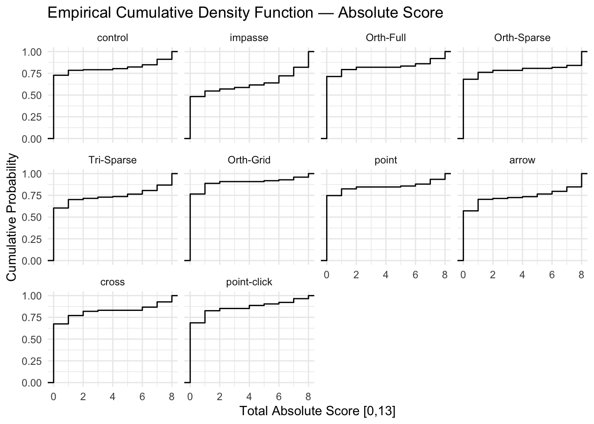
Scaled Scores
CODE
#GGFORMULA | DENSITY HISTOGRAM SUBJECT TOTAL SCALEDgf_props(~s_SCALED, data =df_all)+labs(x ="total scaled score",
y ="% of subjects",
title ="Distribution of Scaled Score ",
subtitle ="Modes at high and low ends of scale suggest concentration of high (vs) low understanding")
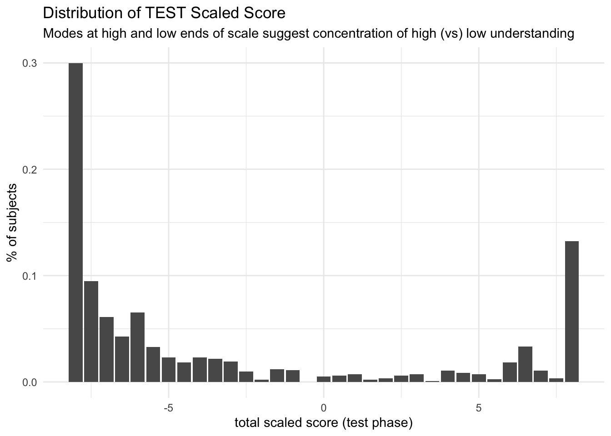
CODE
##GGPUBR | HIST+DENSITY SCORE BY CONDITION/MODEp<-gghistogram(df_all, x ="s_SCALED",binwidth=1,
add ="mean", rug =TRUE,
fill ="pretty_condition", #, palette = c("#00AFBB", "#E7B800"),
add_density =TRUE)facet(p, facet.by=c("pretty_condition"))+labs( title ="Distribution of Scaled Score",
subtitle ="Pattern of response is similar across data collection modes but differs by condition",
x ="total scaled score (test phase)", y ="number of participants")+theme_minimal()+theme(legend.position ="blank")
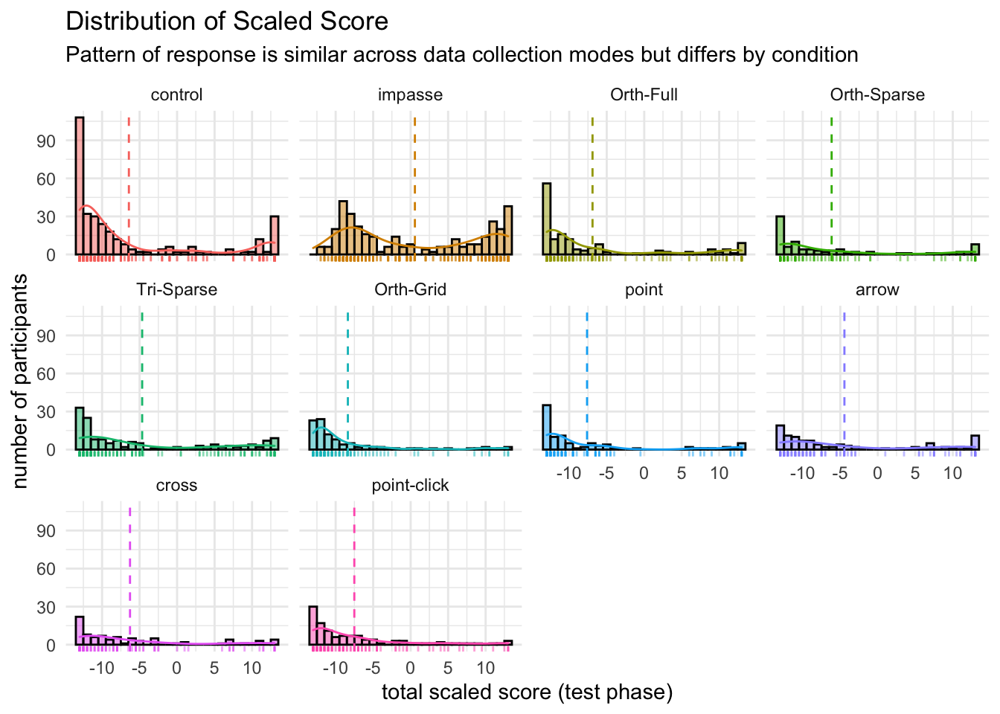
CODE
##VERTICAL RAINCLOUD USING GGDISTRggplot(df_all, aes(x =pretty_condition, y =s_SCALED,
fill =pretty_condition))+ggdist::stat_halfeye(
side ="left",
justification =1.1,
width =1,
point_colour =NA)+geom_boxplot(
inherit.aes =FALSE, #supress fill
mapping =aes(x=pretty_condition, y =s_SCALED),
width =.15,
outlier.shape =NA)+geom_point(
inherit.aes =FALSE, #supress fill
mapping =aes(x=pretty_condition, y =s_SCALED, color =pretty_condition),
size =1.3,
alpha =.3,
position =position_jitter(
seed =1, width =.05))+labs(
title ="Distribution of Scaled Score ",
x ="Condition", y ="Total Absolute Score (Test Phase)")+theme(legend.position ="blank")+coord_cartesian(xlim =c(0.5, NA), clip ="off")
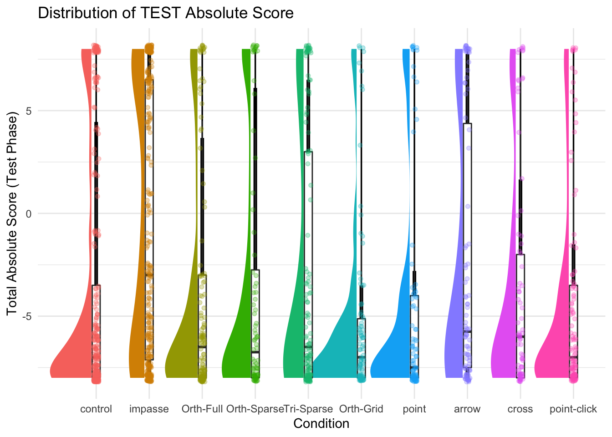
CODE
#PLOT EMPIRICIAL CUMULATIVE DISTRIBUTION FUNCTIONggplot(data =df_all, aes(s_SCALED))+stat_ecdf(geom ="step")+facet_wrap(~pretty_condition)+labs( title ="Empirical Cumulative Density Function — Scaled Score",
x ="Test Phase Scaled Score [-8,8]",
y ="Cumulative Probability")
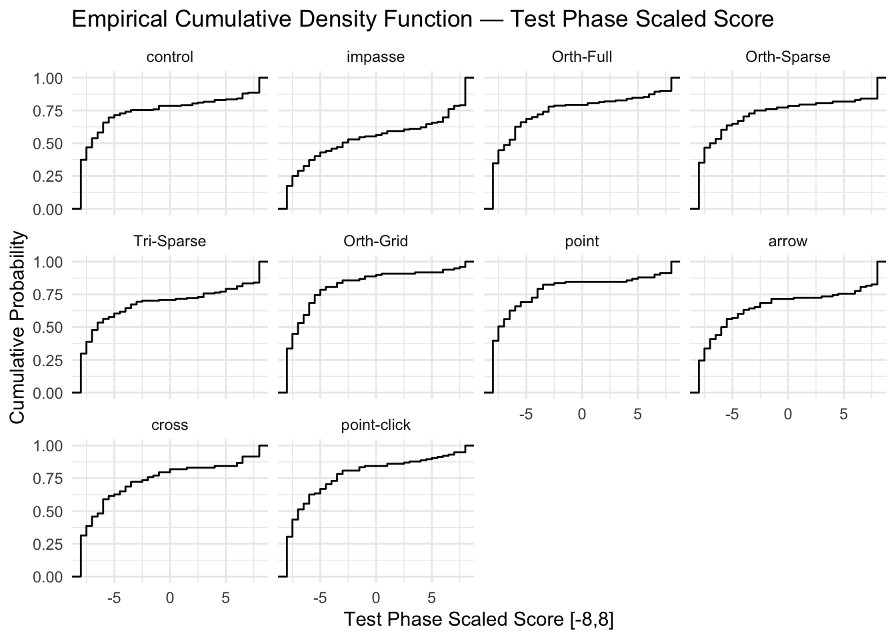
First Item Scores
Next we consider the response accuracy on just the first question of the graph comprehension task: a subject’s first exposure to the TM graph.
First Item Absolute Score
CODE
#PROPORTIONAL BAR CHARTgf_props(~item_q1_NABS, data =df_all)+labs(x ="response accuracy",
y ="% subjects",
title ="Proportion of Correct Responses on First Item",
subtitle="")+theme(legend.position ="none")+theme_ggdist()
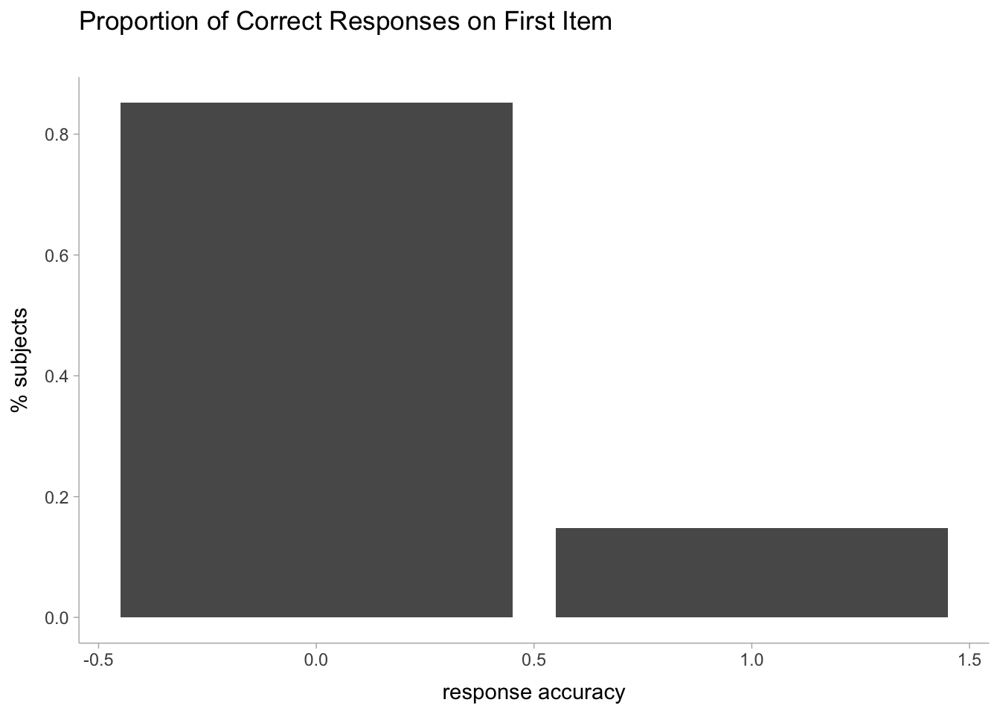
CODE
#PROPORTIONAL BAR CHARTgf_props(~item_q1_NABS, data =df_all, fill =~pretty_condition)%>%gf_facet_wrap(~pretty_condition)+labs(x ="response accuracy",
title ="Proportion of Correct Responses on First Item (by Modality and Condition)",
subtitle="")+theme(legend.position ="none")
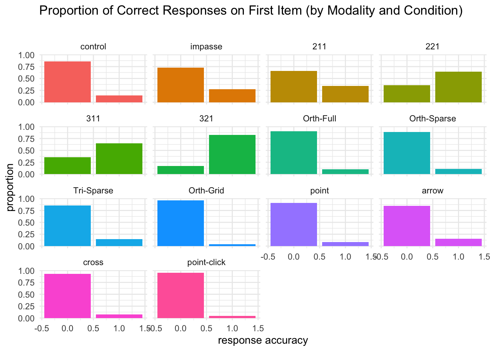
CODE
#MOSAIC PLOT# vcd::mosaic(main="Proportion of Correct Responses on First Item",# data = df_all, pretty_condition ~ item_q1_NABS, rot_labels=c(0,90,0,0), # offset_varnames = c(left = 4.5), offset_labels = c(left = -0.5),just_labels = "right",# spacing = spacing_dimequal(unit(1:2, "lines")))
First Item Scaled Score
At the item level, the scaled score gives us a numeric measure of correctness of interpretation, ranging from -1 to 1. (note: we evaluate scaled_score on the first item rather than interpretation, because no orthogonal interpretation is available in the impasse condition)
CODE
#GGFORMULA | PROPORTIONAL HISTOGRAM SUBJECT FIRST SCALEDgf_props(~item_q1_SCALED, data =df_all)+labs(x ="scaled score (first item)",
y ="% of subjects",
title ="Distribution of First Item Scaled Score",
subtitle ="")
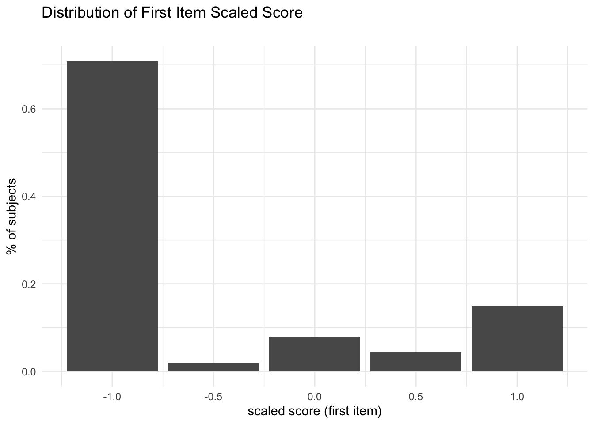
CODE
##GGPUBR | HIST+DENSITY SCORE BY CONDITION/MODEp<-gghistogram(df_all, x ="item_q1_SCALED", binwidth =0.5,
add ="mean", rug =TRUE,
fill ="pretty_condition", #, palette = c("#00AFBB", "#E7B800"),
add_density =TRUE)facet(p, facet.by=c("pretty_condition"))+labs( title ="Distribution of First Item Scaled Score (by Mode and Condition)",
subtitle ="Impasse condition yields more intermediate scores (indicating uncertainty)",
x ="scaled score (firt item) ", y ="number of participants")+theme_minimal()+theme(legend.position ="blank")
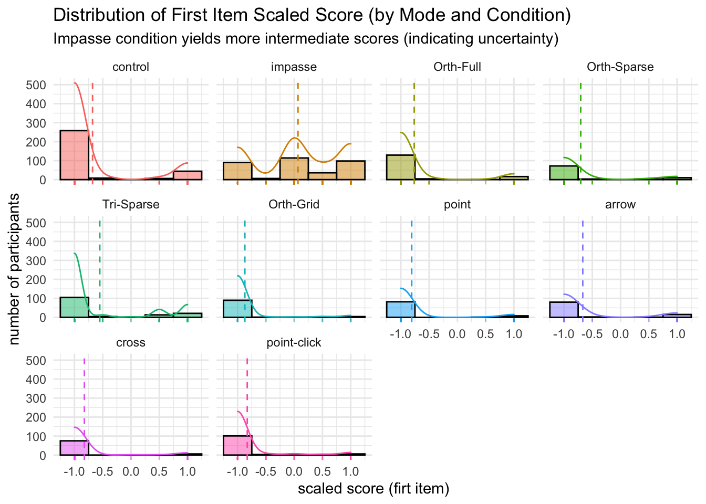
CODE
##GGFORMULA | HIST+DENSITY SCORE BY CONDITION/MODE# stats = df_subjects %>% group_by(pretty_condition, mode) %>% dplyr::summarise(mean = mean(item_q1_SCALED))# gf_density(~item_q1_SCALED, data = df_subjects) %>%# gf_facet_grid(pretty_condition~mode, labeller = label_both) %>%# gf_lims(x = c(-1, 1)) %>%# gf_vline(data = stats, xintercept = ~mean, color = "red") +# labs( title = "Distribution of First Item Scaled Score (by Mode and Condition)",# subtitle ="Pattern of response is the same across data collection modes but differs by condition",# x = "scaled score (firt item) ", y = "number of participants") + # theme_minimal()
Interpretation Scores
TODO IMPORT ITEMS
CODE
# #PROPORTIONAL BAR CHART# gf_propsh(~interpretation, data = df_items, fill = ~pretty_condition) %>% # gf_facet_grid(pretty_condition~pretty_mode) +# labs(x = "% of items",# title = "Proportion of Interpretations Across Items",# subtitle="Impasse Condition yields shift from Orthogonal to alternative interpretations")+# theme(legend.position = "none")#MOSAIC PLOT# vcd::mosaic(main="Proportion of Interpretations across Conditions",# data = df_items, pretty_condition ~ interpretation, rot_labels=c(0,90,0,0), # offset_varnames = c(left = 4.5), offset_labels = c(left = -0.5),just_labels = "right",# spacing = spacing_dimequal(unit(1:2, "lines")))
Cumulative Task Performance
TODO CALC CUMULATIVE PERFORAMNCE OVER ALL ITEMS
CODE
# #VISUALIZE progress over time ABSOLUTE score # ggplot(data = df_absolute_progress, aes(x = question, y = score, group = subject, alpha = 0.01, color = pretty_condition)) + # geom_line(position=position_jitter(w=0.15, h=0.15), size=0.1) +# facet_wrap(~pretty_condition) + # labs (title = "Cumulative Absolute Score over sequence of task", x = "Question" , y = "Cumulative Absolute Score") + # scale_x_continuous(breaks = c(1,2,3,4,5,6,7,8,9,10,11,12,13)) +# theme_minimal() + theme(legend.position = "blank")# # #VISUALIZE progress over time SCALED score # ggplot(data = df_scaled_progress, aes(x = question, y = score, group = subject, alpha = 0.01, color = pretty_condition)) + # geom_line(position=position_jitter(w=0.15, h=0.15), size=0.1) +# facet_wrap(~pretty_condition) + # labs (title = "Cumulative Scaled Score over sequence of task", x = "Question" , y = "Cumulative Scaled Score") + # scale_x_continuous(breaks = c(1,2,3,4,5,6,7,8,9,10,11,12,13)) +# theme_minimal() + theme(legend.position = "blank")
RESPONSE LATENCY
Time on First Item
CODE
#HISTOGRAMgf_dhistogram(~item_q1_rt, data =df_all)%>%# gf_vline(xintercept = ~time.stats["lab",]$mean, color = "black") %>% gf_fitdistr(dist="gamma", color="red")+labs(title="Distribution of First Item Response Time (seconds)", subtitle ="fit by gamma distribution", x ="First Item Response Time (seconds)", y ="% items")
Warning in densfun(x, parm[1], parm[2], ...): NaNs produced
Warning in densfun(x, parm[1], parm[2], ...): NaNs produced
Warning in densfun(x, parm[1], parm[2], ...): NaNs produced
Warning in densfun(x, parm[1], parm[2], ...): NaNs produced
Warning in densfun(x, parm[1], parm[2], ...): NaNs produced
CODE
##GGPUBR | HIST+DENSITY SCORE BY CONDITION/MODEp<-gghistogram(df_all, x ="item_q1_rt", binwidth =0.5,
add ="mean", rug =TRUE,
fill ="pretty_condition", #, palette = c("#00AFBB", "#E7B800"),
add_density =TRUE)facet(p, facet.by=c("pretty_condition"))+labs( title ="Distribution of First Item Response Time (seconds)",
subtitle ="",
x ="First Item Response Time (seconds)", y ="number of items")+theme_minimal()+theme(legend.position ="blank")
CODE
#recode as boolean correctdf_subjects<-df_subjects%>%mutate(
item_q1_NABS =as.logical(item_q1_NABS))##RAINCLOUD USING GGDISTRggplot(df_all, aes(x =pretty_condition, y =item_q1_rt, color =item_q1_NABS))+ggdist::stat_halfeye(
side ="left",
justification =1.2,
adjust =.5,
width =.6,
.width =0,
point_colour =NA)+geom_boxplot(
width =.15,
outlier.shape =NA)+geom_point(
size =1.3,
alpha =.3,
position =position_jitter(
seed =1, width =.1))+labs( title ="Distribution of First Item Response Time (seconds)",
subtitle ="",
y ="First Item Response Time (s)", x ="Condition")+theme_ggdist()
# # #HISTOGRAM# gf_dhistogram(~rt_s, data = df_items) %>%# gf_vline(xintercept = ~time.stats["lab",]$mean, color = "black") %>% # gf_fitdistr(dist="gamma", color="red")+# labs(title="Distribution of Item Response Time (seconds)", # subtitle = "fit by gamma distribution", x = "Item Response Time (seconds)", y = "% items") # # # ##GGPUBR | HIST+DENSITY SCORE BY CONDITION/MODE# p <- gghistogram(df_items, x = "rt_s", binwidth = 0.5,# add = "mean", rug = TRUE,# fill = "pretty_condition", #, palette = c("#00AFBB", "#E7B800"),# add_density = TRUE)# facet(p, facet.by=c("pretty_condition","pretty_mode")) +# labs( title = "Distribution of Item Response Time (seconds)",# subtitle ="",# x = "Item Response Time (seconds)", y = "number of items") +# theme_minimal() + theme(legend.position = "blank")# # # #recode as boolean correct# df_items <- df_items %>% mutate(# score_niceABS = as.logical(score_niceABS)# )# # ##RAINCLOUD USING GGDISTR# ggplot(df_items, aes(x = pretty_condition, y = rt_s, color = score_niceABS) ) + # ggdist::stat_halfeye(# side = "left",# # position = position_dodgejust(),# justification = 1.5, # # adjust = .5, # width = .5, # .width = 0, # point_colour = NA) + # geom_boxplot(# width = .15, # outlier.shape = NA,# position = position_dodge2()# ) +# geom_point(# size = 1.3,# alpha = .3,# position = position_jitterdodge(# # seed = 1,# dodge.width = 0.5,# jitter.width = 0.075# )) +# labs( title = "Distribution of Item Response Time (seconds)",# subtitle ="",# y = "Item Response Time (s)", x = "Condition") +# theme_ggdist() # # + theme(legend.position = "blank")# # + coord_cartesian(xlim = c(1.2, NA), clip = "off")
Time on SCAFFOLD Phase
Here we consider just the time spent on the first five items of the task (the scaffold phase).
CODE
#HISTOGRAMgf_dhistogram(~item_scaffold_rt, data =df_all)%>%# gf_vline(xintercept = ~time.stats["lab",]$mean, color = "black") %>% gf_fitdistr(dist="gamma", color="red")+labs(title="Distribution of SCAFFOLD Phase Response Time (minutes)", subtitle ="fit by gamma distribution", x ="Scaffold Phase Time (minutes)", y ="% subjects")
Warning in densfun(x, parm[1], parm[2], ...): NaNs produced
Warning in densfun(x, parm[1], parm[2], ...): NaNs produced
Warning in densfun(x, parm[1], parm[2], ...): NaNs produced
Warning in densfun(x, parm[1], parm[2], ...): NaNs produced
Warning in densfun(x, parm[1], parm[2], ...): NaNs produced
Warning in densfun(x, parm[1], parm[2], ...): NaNs produced
Warning in densfun(x, parm[1], parm[2], ...): NaNs produced
Warning in densfun(x, parm[1], parm[2], ...): NaNs produced
Warning in densfun(x, parm[1], parm[2], ...): NaNs produced
Warning in densfun(x, parm[1], parm[2], ...): NaNs produced
Warning in densfun(x, parm[1], parm[2], ...): NaNs produced
Warning in densfun(x, parm[1], parm[2], ...): NaNs produced
Warning in densfun(x, parm[1], parm[2], ...): NaNs produced
Warning in densfun(x, parm[1], parm[2], ...): NaNs produced
Warning in densfun(x, parm[1], parm[2], ...): NaNs produced
Warning in densfun(x, parm[1], parm[2], ...): NaNs produced
CODE
##GGPUBR | HIST+DENSITY SCORE BY CONDITION/MODEp<-gghistogram(df_all, x ="item_scaffold_rt", binwidth =0.5,
add ="mean", rug =TRUE,
fill ="pretty_condition", #, palette = c("#00AFBB", "#E7B800"),
add_density =TRUE)facet(p, facet.by=c("pretty_condition"))+labs( title ="Distribution of SCAFFOLD Phase Response Time (minutes)",
subtitle ="",
x ="Scaffold Phase Time (minutes)", y ="number of subjects")+theme_minimal()+theme(legend.position ="blank")
CODE
##VERTICAL RAINCLOUD USING GGDISTRggplot(df_all, aes(x =pretty_condition, y =item_scaffold_rt, fill =pretty_condition))+ggdist::stat_halfeye(
side ="left",
justification =1.2,
adjust =.5,
width =.6,
.width =0,
point_colour =NA)+geom_boxplot(
inherit.aes =FALSE, #supress fill
mapping =aes(x=pretty_condition, y =item_scaffold_rt),
width =.15,
outlier.shape =NA)+geom_point(
inherit.aes =FALSE, #supress fill
mapping =aes(x=pretty_condition, y =item_scaffold_rt, color =pretty_condition),
size =1.3,
alpha =.3,
position =position_jitter(
seed =1, width =.05))+labs( title ="Distribution of SCAFFOLD Phase Response Time (minutes)",
subtitle ="",
y ="Total Study Time (minutes)", x ="Condition")+theme_ggdist()+theme(legend.position ="blank")#+
#SCATTERPLOT [SCORE X ITEM RESPONSE TIME]gf_jitter(s_SCALED~rt_m, data =df_all, alpha =0.5, color=~pretty_condition)%>%gf_facet_wrap(~pretty_condition)+labs(
title ="Total (Scaled) Score by Total Item Response Time",
subtitle ="",
x ="Total Item Response Time (minutes)", y ="Total Scaled Score ")+theme(legend.position ="blank")
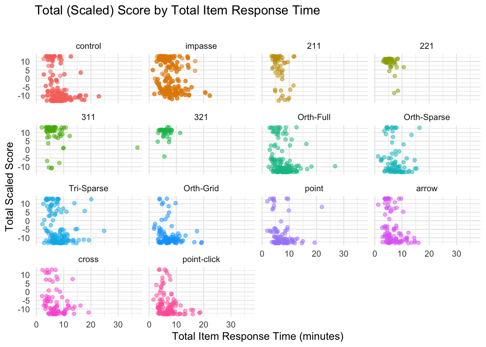
CODE
#SCATTERPLOT [SCORE X ITEM RESPONSE TIME]gf_jitter(s_SCALED~item_avg_rt, data =df_all, alpha =0.5, color=~pretty_condition)%>%gf_facet_wrap(~pretty_condition)+labs(
title ="Total (Scaled) Score by Average Item Response Time",
subtitle ="",
x ="Average Item Response Time (seconds)", y ="Total Scaled Score")+theme(legend.position ="blank")
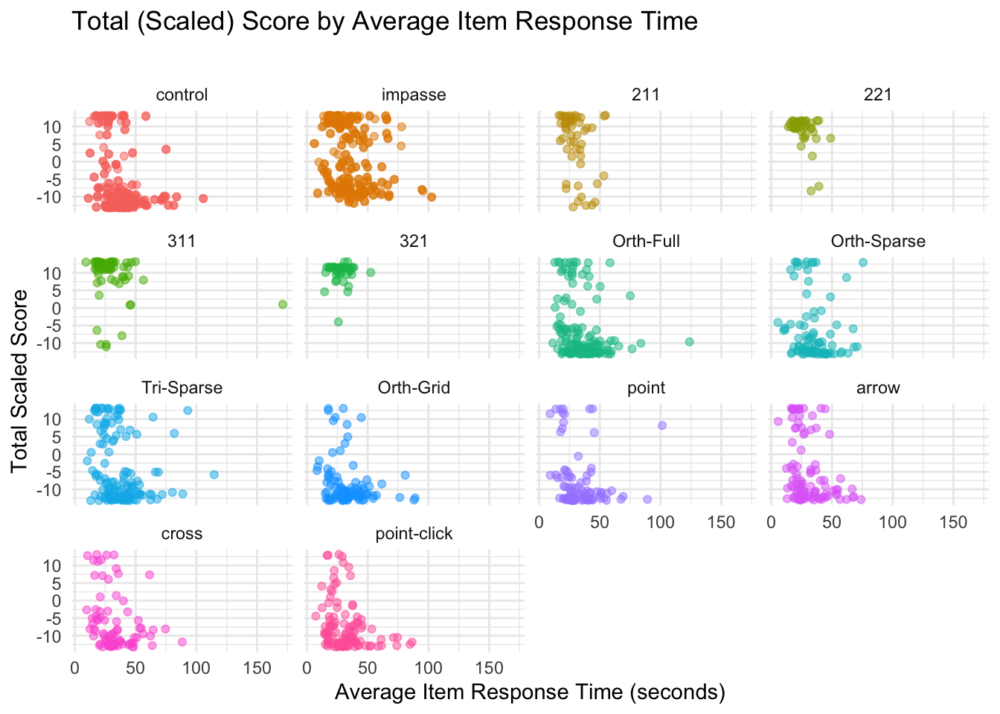
CODE
#SCATTERPLOT [SCORE X ITEM RESPONSE TIME]gf_jitter(s_SCALED~item_scaffold_rt, data =df_all, alpha =0.5, color=~pretty_condition)%>%gf_facet_wrap(~pretty_condition)+labs(
title ="Total (Scaled) Score by SCAFFOLD PHASE Item Response Time",
subtitle ="",
x ="SCAFFOLD PHASE Item Response Time (minutes)", y ="Total Scaled Score ")+theme(legend.position ="blank")
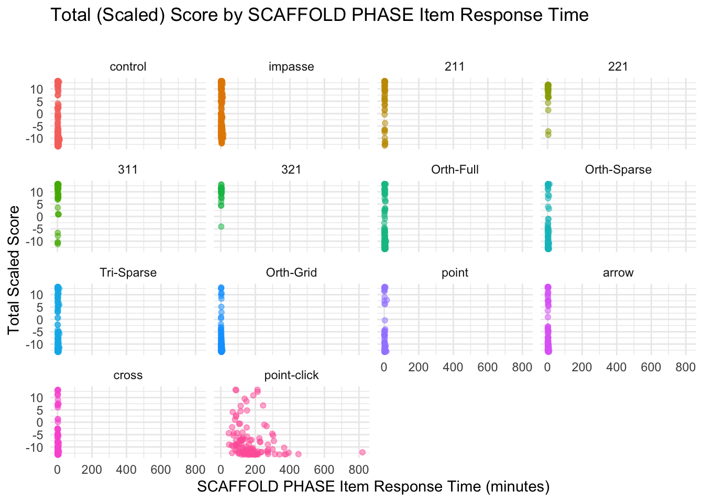
CODE
#SCATTERPLOT [SCORE X ITEM RESPONSE TIME]gf_jitter(s_SCALED~item_max_rt, data =df_all%>%filter(item_max_rt<400), alpha =0.5, color=~pretty_condition)%>%gf_facet_wrap(~pretty_condition)+labs(
title ="Total (Scaled) Score by MAX Item Response Time",
subtitle ="",
x ="MAX Item Response Time (s)", y ="Total Scaled Score ")+theme(legend.position ="blank")
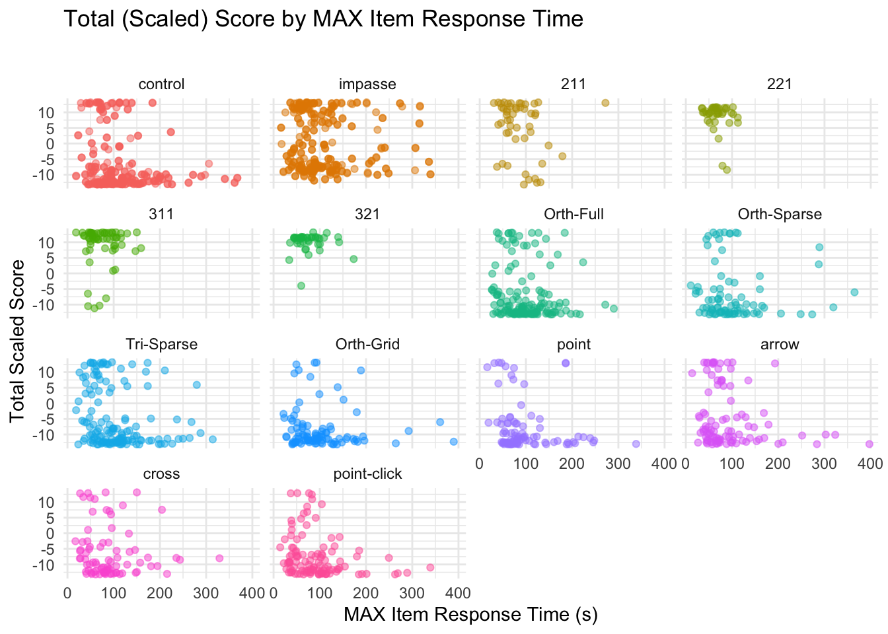
CODE
# # q.stats <- df_items %>% filter(q != 6) %>% dplyr::group_by(q, pretty_condition, score_niceABS) %>% summarise(# m = mean(rt_s),# sd = sd(rt_s),# group = paste(pretty_condition,"-",score_niceABS)# )# # gf_line( m ~ as.factor(q), group = ~group, color = ~score_niceABS,data = q.stats) %>% # gf_point() %>% # gf_facet_wrap(~pretty_condition) + scale_color_manual(values=c("red","green")) + # labs(title = "Average ITEM response time by condition",# subtitle = "Correct responses are generally faster [computational efficiency] except on Q1 [learning]",# x = "Question", y = "Averate Item Response Time", color="Correct Response")
CODE
# # q.stats <- df_items %>% filter(q != 6) %>% dplyr::group_by(q, pretty_condition, interpretation) %>% summarise(# m = mean(rt_s),# sd = sd(rt_s),# group = paste(pretty_condition,"-",score_SCALED)# )# # gf_line( m ~ as.factor(q), group = ~group, color = ~interpretation,data = q.stats) %>% # gf_point() %>% # gf_facet_wrap(~pretty_condition) + #+ scale_color_manual(values=c("red","green")) + # labs(title = "Average ITEM response time by condition",# subtitle = "Correct responses are generally faster [computational efficiency] except on Q1 [learning]",# x = "Question", y = "Averate Item Response Time", color="Interpretation")
CODE
# # x <- df_items %>% filter(q %nin% c(6,9)) %>% dplyr::group_by(subject) %>% mutate(# total = sum(score_niceABS),# perf = as.factor(total < 5),# perf = recode(perf, "FALSE"="high-scoring", "TRUE"="low-scoring")) %>% ungroup()# # gf_line( rt_s ~ as.factor(q), group = ~subject, color = ~interpretation, data = x) %>% # gf_facet_grid(pretty_condition ~ perf)+ scale_x_discrete(labels = c(1 , 2, 3, 4, 5, 7, 8, 10, 11, 12, 13, 14, 15))+ labs(# title = "Response Time (s) by Question [facet by score <5]"# )
CODE
gf_boxplot(item_avg_rt~pretty_condition, data =df_all)+labs(title ="Average item response time by mode and condition")
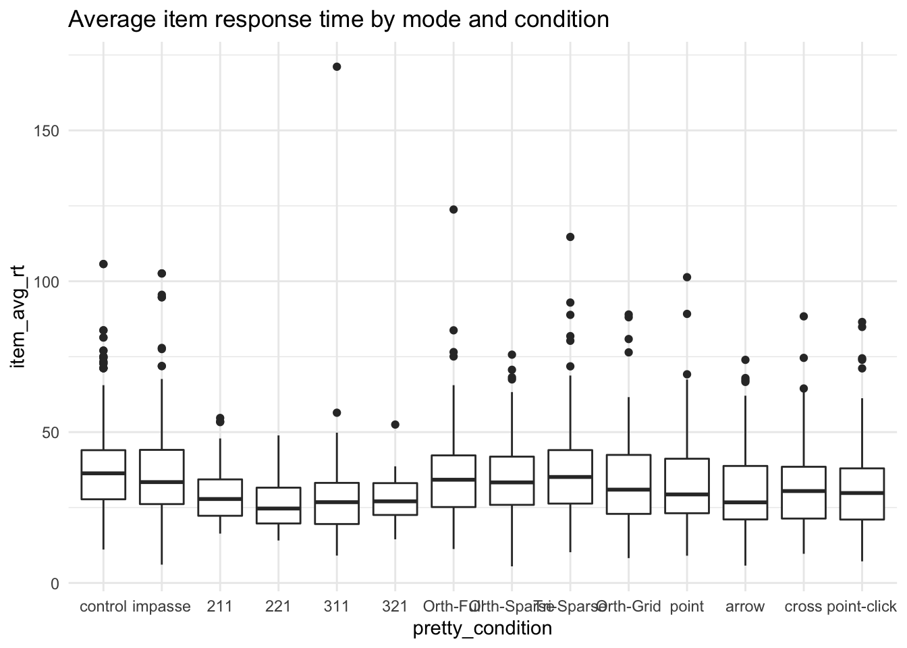
CODE
gf_boxplot(item_scaffold_rt~pretty_condition, data =df_all)+labs(title ="Average SCAFFOLD response time by mode and condition")
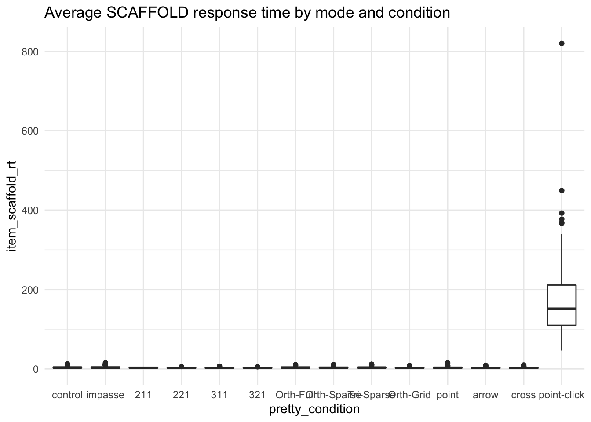
CODE
gf_boxplot(item_test_rt~pretty_condition, data =df_all)+labs(title ="Average TEST response time by mode and condition")
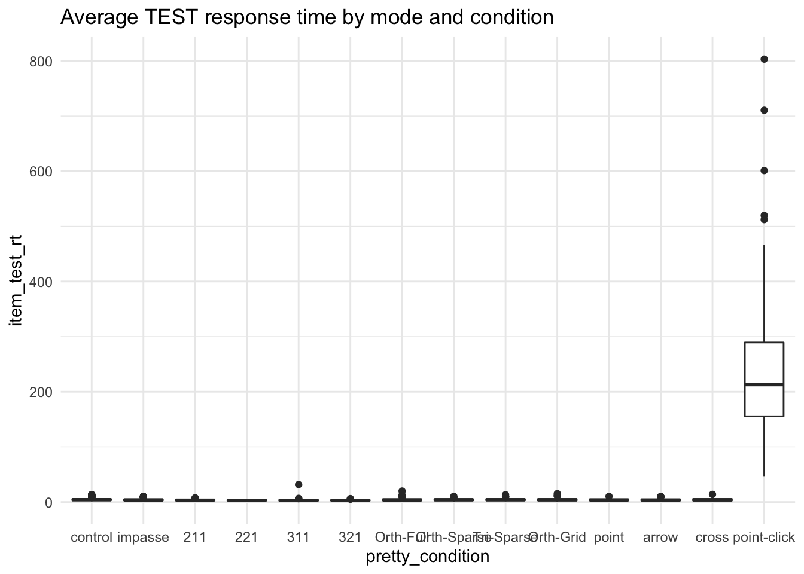
CODE
gf_boxplot(totaltime_m~pretty_condition, data =df_all)+labs(title ="Average TOTAL response time by mode and condition")
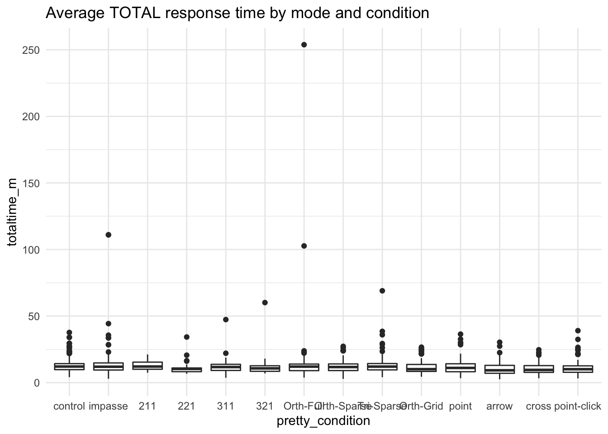
CODE
gf_boxplot(item_q1_rt~pretty_condition, data =df_all)%>%gf_jitter(width=0.2, alpha =0.5, size =0.75, color =~item_q1_NABS)+labs(title ="Average FIRST ITEM response time by mode and condition")
Warning: 'data_findcols()' is deprecated and will be removed in a future update.
Its usage is discouraged. Please use 'data_find()' instead.
Warning: 'data_findcols()' is deprecated and will be removed in a future update.
Its usage is discouraged. Please use 'data_find()' instead.
Warning: 'data_findcols()' is deprecated and will be removed in a future update.
Its usage is discouraged. Please use 'data_find()' instead.
We fitted a linear model (estimated using OLS) to predict DV_percent_NABS with pretty_condition (formula: DV_percent_NABS ~ pretty_condition). The model explains a statistically significant and moderate proportion of variance (R2 = 0.26, F(13, 1643) = 43.47, p < .001, adj. R2 = 0.25). The model's intercept, corresponding to pretty_condition = control, is at 0.19 (95% CI [0.15, 0.22], t(1643) = 9.58, p < .001). Within this model:
- The effect of pretty condition [impasse] is statistically significant and positive (beta = 0.19, 95% CI [0.14, 0.24], t(1643) = 6.95, p < .001; Std. beta = 0.49, 95% CI [0.35, 0.63])
- The effect of pretty condition [211] is statistically significant and positive (beta = 0.45, 95% CI [0.35, 0.55], t(1643) = 8.88, p < .001; Std. beta = 1.18, 95% CI [0.92, 1.44])
- The effect of pretty condition [221] is statistically significant and positive (beta = 0.57, 95% CI [0.46, 0.68], t(1643) = 10.39, p < .001; Std. beta = 1.49, 95% CI [1.21, 1.77])
- The effect of pretty condition [311] is statistically significant and positive (beta = 0.63, 95% CI [0.54, 0.72], t(1643) = 13.60, p < .001; Std. beta = 1.65, 95% CI [1.41, 1.89])
- The effect of pretty condition [321] is statistically significant and positive (beta = 0.64, 95% CI [0.53, 0.75], t(1643) = 11.60, p < .001; Std. beta = 1.68, 95% CI [1.39, 1.96])
- The effect of pretty condition [Orth-Full] is statistically non-significant and negative (beta = -0.02, 95% CI [-0.08, 0.05], t(1643) = -0.54, p = 0.589; Std. beta = -0.05, 95% CI [-0.22, 0.12])
- The effect of pretty condition [Orth-Sparse] is statistically non-significant and positive (beta = 0.02, 95% CI [-0.06, 0.09], t(1643) = 0.38, p = 0.706; Std. beta = 0.04, 95% CI [-0.17, 0.25])
- The effect of pretty condition [Tri-Sparse] is statistically non-significant and positive (beta = 0.06, 95% CI [-8.26e-03, 0.12], t(1643) = 1.72, p = 0.086; Std. beta = 0.15, 95% CI [-0.02, 0.33])
- The effect of pretty condition [Orth-Grid] is statistically significant and negative (beta = -0.09, 95% CI [-0.16, -9.57e-03], t(1643) = -2.21, p = 0.027; Std. beta = -0.22, 95% CI [-0.42, -0.03])
- The effect of pretty condition [point] is statistically non-significant and negative (beta = -0.04, 95% CI [-0.11, 0.04], t(1643) = -0.89, p = 0.374; Std. beta = -0.09, 95% CI [-0.30, 0.11])
- The effect of pretty condition [arrow] is statistically non-significant and positive (beta = 0.07, 95% CI [-1.19e-03, 0.15], t(1643) = 1.93, p = 0.054; Std. beta = 0.20, 95% CI [-3.12e-03, 0.39])
- The effect of pretty condition [cross] is statistically non-significant and negative (beta = -6.90e-03, 95% CI [-0.09, 0.07], t(1643) = -0.17, p = 0.867; Std. beta = -0.02, 95% CI [-0.23, 0.19])
- The effect of pretty condition [point-click] is statistically non-significant and negative (beta = -0.06, 95% CI [-0.13, 0.02], t(1643) = -1.54, p = 0.123; Std. beta = -0.15, 95% CI [-0.33, 0.04])
Standardized parameters were obtained by fitting the model on a standardized version of the dataset. 95% Confidence Intervals (CIs) and p-values were computed using the Wald approximation.
##UNCERTAINTY ESTIMATES OF THE MODEL df_all%>%data_grid(pretty_condition)%>%augment(m, newdata =., se_fit =TRUE)%>%ggplot(aes(y =pretty_condition))+stat_halfeye(aes(xdist =dist_student_t(df =df.residual(m), mu =.fitted, sigma =.se.fit)),
scale =.5)+# we'll add the data back in too (scale = .5 above adjusts the halfeye height so# that the data fit in as well)geom_point(aes(x =DV_percent_NABS), data =df_all, pch ="|", size =2, position =position_nudge(y =-.15))+labs(
title ="Regression Model | Predicted Conditional Means",
caption =" % Correct ~ Condition; halfeye estimated using student's t centered at model predicted mean with SE")
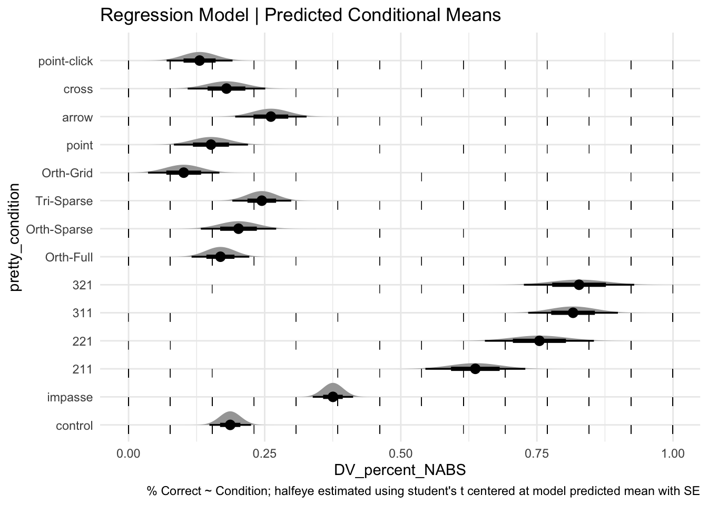
OSPAN
CODE
title="OSPAN Participants by Condition"cols=c("Condition","n")cont<-table(df_ospan$pretty_condition)cont%>%addmargins()%>%kbl(caption =title, col.names =cols)%>%kable_classic()
OSPAN Participants by Condition
Condition
n
control
130
impasse
136
211
5
221
11
311
3
321
7
Orth-Full
0
Orth-Sparse
0
Tri-Sparse
0
Orth-Grid
0
point
0
arrow
0
cross
0
point-click
0
Sum
292
TODO OSPAN description
CODE
title="Descriptive Statistics of OSPAN Task Accuracy"ospan.stats<-rbind("MATH"=df_ospan%>%dplyr::select(math_acc)%>%unlist()%>%favstats(),
"ORDER"=df_ospan%>%dplyr::select(order_acc)%>%unlist()%>%favstats(),
"WEIGHTED"=df_ospan%>%dplyr::select(weighted)%>%unlist()%>%favstats())ospan.stats%>%kbl(caption =title)%>%kable_classic()%>%footnote(general ="MATH = %correct of all math questions;
ORDER = % correct of OSPAN ordering (out of 30); WEIGHTED = math*ospan number correct", general_title ="Note: ",footnote_as_chunk =T)
Descriptive Statistics of OSPAN Task Accuracy
min
Q1
median
Q3
max
mean
sd
n
missing
MATH
0.517
0.897
0.931
0.966
1
0.924
0.084
292
0
ORDER
0.000
0.533
0.733
0.875
1
0.682
0.256
292
0
WEIGHTED
0.000
13.991
20.741
24.871
30
19.179
7.465
292
0
Note: MATH = %correct of all math questions; ORDER = % correct of OSPAN ordering (out of 30); WEIGHTED = math*ospan number correct
For (online) OSPAN weighted scores (n = 292) range from 0 to 30 with a mean score of (M = 19.18, SD = 7.46).
CODE
#GGFORMULA | DENSITY HISTOGRAM gf_dhistogram(~weighted, data =df_ospan)+labs(x ="OSPAN (weighted) score",
y ="% of subjects",
title ="Distribution of OSPAN SCORE",
subtitle ="")
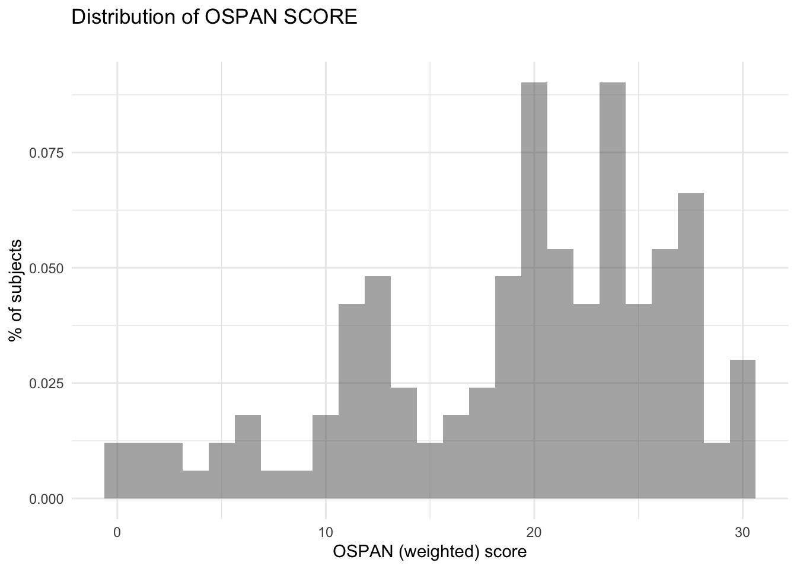
CODE
##GGPUBR | HIST+DENSITY SCORE BY CONDITION/MODEp<-gghistogram(df_ospan, x ="weighted", binwidth =1,
add ="mean", rug =TRUE,
fill ="pretty_condition", #, palette = c("#00AFBB", "#E7B800"),
add_density =TRUE)facet(p, facet.by=c("pretty_condition"))+labs( title ="Distribution of OSPAN Score",
subtitle ="The Distribution of OSPAN scores is similar across conditions",
x ="OSPAN (weighted) score", y ="number of subjects")+theme_minimal()+theme(legend.position ="blank")
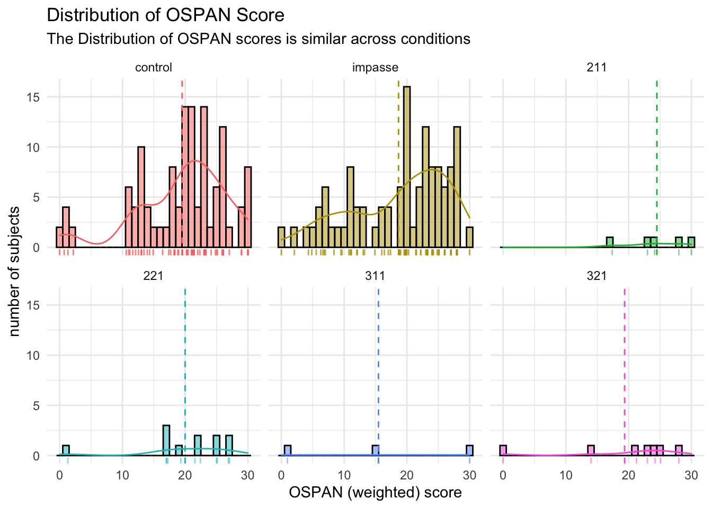
CODE
#PLOT EMPIRICIAL CUMULATIVE DISTRIBUTION FUNCTIONggplot(data =df_ospan, aes(weighted))+stat_ecdf()+facet_wrap(~pretty_condition)+labs( title ="Empirical Cumulative Density Function — OSPAN",
x ="OSPAN (weighted) score",
y ="Cumulative Probability")+theme_minimal()
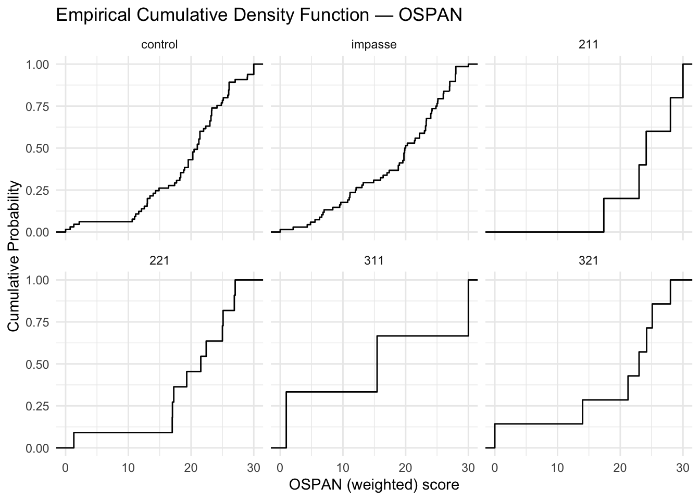
CODE
#IXN PLOT# ospan.stats <- favstats(weighted, groups = condition)
MODELS
CODE
#CONDITION ONLY MODELm1<-lm(item_test_SCALED~condition, data =df_ospan)summary(m1)
Call:
lm(formula = item_test_SCALED ~ condition, data = df_ospan)
Residuals:
Min 1Q Median 3Q Max
-6.86 -3.38 -2.05 3.62 12.62
Coefficients:
Estimate Std. Error t value Pr(>|t|)
(Intercept) -4.623 0.501 -9.23 < 2e-16 ***
condition121 3.483 0.701 4.97 1.1e-06 ***
condition211 12.023 2.603 4.62 5.8e-06 ***
condition221 11.350 1.794 6.33 9.6e-10 ***
condition311 6.290 3.336 1.89 0.06 .
condition321 10.480 2.216 4.73 3.6e-06 ***
---
Signif. codes: 0 '***' 0.001 '**' 0.01 '*' 0.05 '.' 0.1 ' ' 1
Residual standard error: 5.71 on 286 degrees of freedom
Multiple R-squared: 0.227, Adjusted R-squared: 0.214
F-statistic: 16.8 on 5 and 286 DF, p-value: 1.39e-14
CODE
#OSPAN ONLY MODELm2<-lm(item_test_SCALED~weighted, data =df_ospan)summary(m2)
Call:
lm(formula = item_test_SCALED ~ weighted, data = df_ospan)
Residuals:
Min 1Q Median 3Q Max
-6.50 -5.59 -3.62 7.96 10.97
Coefficients:
Estimate Std. Error t value Pr(>|t|)
(Intercept) -3.0234 1.0410 -2.9 0.004 **
weighted 0.0507 0.0506 1.0 0.317
---
Signif. codes: 0 '***' 0.001 '**' 0.01 '*' 0.05 '.' 0.1 ' ' 1
Residual standard error: 6.44 on 290 degrees of freedom
Multiple R-squared: 0.00345, Adjusted R-squared: 1.2e-05
F-statistic: 1 on 1 and 290 DF, p-value: 0.317
#OSPAN MEDIAN SPLITmed_ospan=median(df_ospan$weighted)df_ospan$low_ospan<-as.factor(df_ospan$weighted<med_ospan)#STANDARDIZED OSPAN ONLY MODELm3<-lm(item_test_SCALED~low_ospan, data =df_ospan)summary(m3)
Call:
lm(formula = item_test_SCALED ~ low_ospan, data = df_ospan)
Residuals:
Min 1Q Median 3Q Max
-6.71 -5.19 -3.19 7.79 10.81
Coefficients:
Estimate Std. Error t value Pr(>|t|)
(Intercept) -1.29 0.53 -2.44 0.015 *
low_ospanTRUE -1.51 0.75 -2.02 0.045 *
---
Signif. codes: 0 '***' 0.001 '**' 0.01 '*' 0.05 '.' 0.1 ' ' 1
Residual standard error: 6.41 on 290 degrees of freedom
Multiple R-squared: 0.0138, Adjusted R-squared: 0.0104
F-statistic: 4.07 on 1 and 290 DF, p-value: 0.0445
CODE
#MULTIPLE WITH STANDARDIZED OSPANmr<-lm(item_test_SCALED~condition+low_ospan, data =df_ospan)summary(mr)
Call:
lm(formula = item_test_SCALED ~ condition + low_ospan, data = df_ospan)
Residuals:
Min 1Q Median 3Q Max
-7.51 -3.98 -2.13 4.22 13.24
Coefficients:
Estimate Std. Error t value Pr(>|t|)
(Intercept) -4.020 0.598 -6.72 9.9e-11 ***
condition121 3.529 0.698 5.05 7.8e-07 ***
condition211 11.665 2.600 4.49 1.1e-05 ***
condition221 11.304 1.787 6.33 9.6e-10 ***
condition311 6.503 3.324 1.96 0.051 .
condition321 10.227 2.212 4.62 5.7e-06 ***
low_ospanTRUE -1.224 0.670 -1.83 0.069 .
---
Signif. codes: 0 '***' 0.001 '**' 0.01 '*' 0.05 '.' 0.1 ' ' 1
Residual standard error: 5.69 on 285 degrees of freedom
Multiple R-squared: 0.236, Adjusted R-squared: 0.22
F-statistic: 14.7 on 6 and 285 DF, p-value: 1.25e-14
Analysis of Variance Table
Response: item_test_SCALED
Df Sum Sq Mean Sq F value Pr(>F)
condition 5 2746 549 16.97 1.1e-14 ***
low_ospan 1 108 108 3.33 0.069 .
Residuals 285 9224 32
---
Signif. codes: 0 '***' 0.001 '**' 0.01 '*' 0.05 '.' 0.1 ' ' 1
CODE
#SINGLE WITH STANDARDIZED OSPANmr2<-lm(item_test_SCALED~condition+low_ospan, data =df_ospan)summary(mr2)
Call:
lm(formula = item_test_SCALED ~ condition + low_ospan, data = df_ospan)
Residuals:
Min 1Q Median 3Q Max
-7.51 -3.98 -2.13 4.22 13.24
Coefficients:
Estimate Std. Error t value Pr(>|t|)
(Intercept) -4.020 0.598 -6.72 9.9e-11 ***
condition121 3.529 0.698 5.05 7.8e-07 ***
condition211 11.665 2.600 4.49 1.1e-05 ***
condition221 11.304 1.787 6.33 9.6e-10 ***
condition311 6.503 3.324 1.96 0.051 .
condition321 10.227 2.212 4.62 5.7e-06 ***
low_ospanTRUE -1.224 0.670 -1.83 0.069 .
---
Signif. codes: 0 '***' 0.001 '**' 0.01 '*' 0.05 '.' 0.1 ' ' 1
Residual standard error: 5.69 on 285 degrees of freedom
Multiple R-squared: 0.236, Adjusted R-squared: 0.22
F-statistic: 14.7 on 6 and 285 DF, p-value: 1.25e-14
CODE
gf_histogram(~item_test_SCALED, data =df_ospan)%>%gf_facet_grid(low_ospan~condition, labeller =label_both)
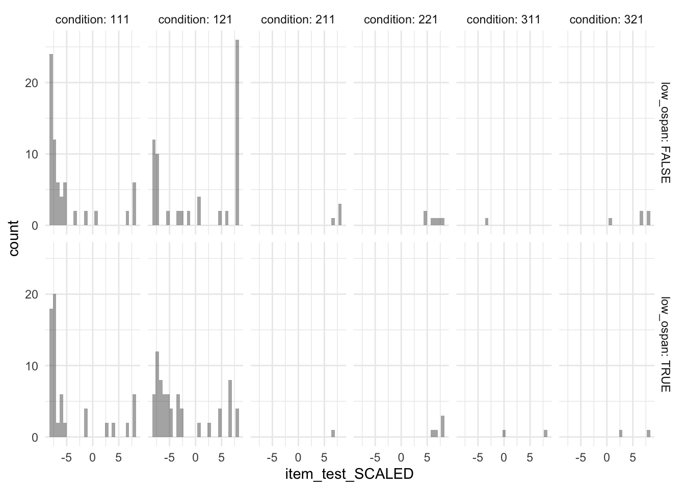
CODE
gf_jitter(item_test_SCALED~weighted, color =~pretty_condition, data =df_ospan)%>%gf_facet_wrap(~pretty_condition)
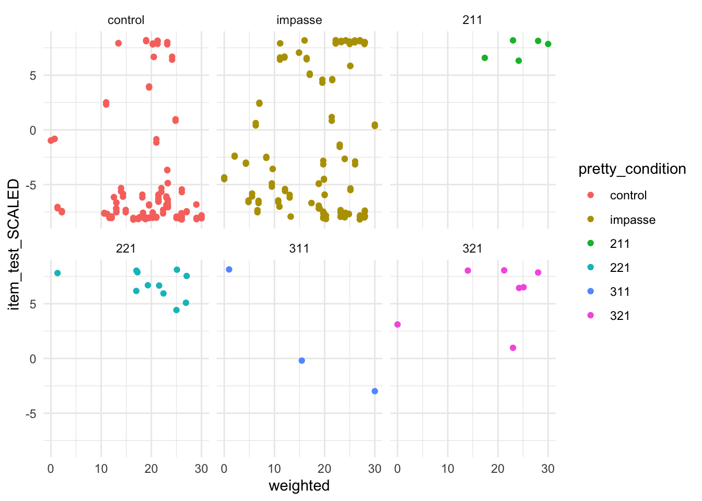
CODE
gf_dhistogram(~item_test_NABS , color =~pretty_condition, data =df_ospan)%>%gf_facet_wrap(low_ospan~pretty_condition, labeller =label_both)
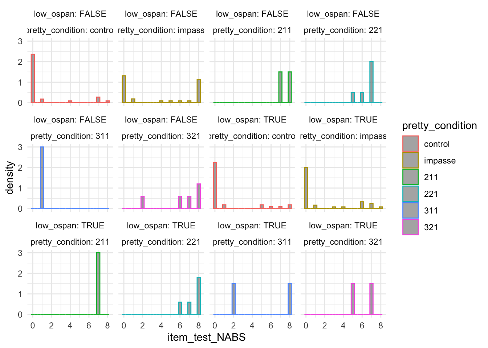
OPSAN score does NOT predict performance in the control condition.
CODE
control<-df_ospan%>%filter(condition=="111")gf_dhistogram(~item_test_NABS , color =~pretty_condition, data =control)%>%gf_facet_wrap(low_ospan~pretty_condition, labeller =label_both)
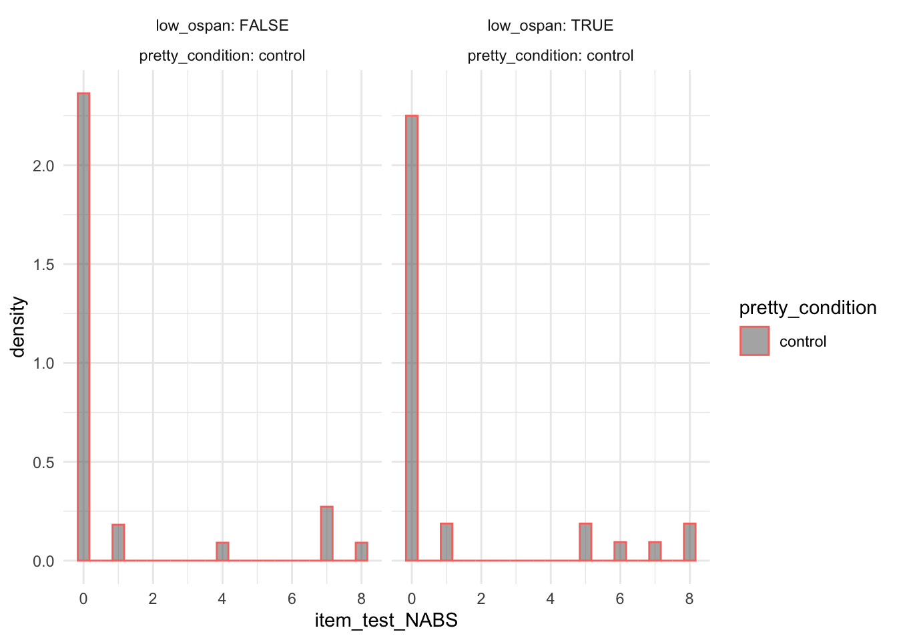
CODE
#test performance predicted by OSPAN scorem<-lm(item_test_NABS~weighted, data =control)summary(m)
Call:
lm(formula = item_test_NABS ~ weighted, data = control)
Residuals:
Min 1Q Median 3Q Max
-1.17 -1.17 -1.17 -1.16 6.83
Coefficients:
Estimate Std. Error t value Pr(>|t|)
(Intercept) 1.160579 0.653251 1.78 0.078 .
weighted 0.000443 0.031503 0.01 0.989
---
Signif. codes: 0 '***' 0.001 '**' 0.01 '*' 0.05 '.' 0.1 ' ' 1
Residual standard error: 2.52 on 128 degrees of freedom
Multiple R-squared: 1.55e-06, Adjusted R-squared: -0.00781
F-statistic: 0.000198 on 1 and 128 DF, p-value: 0.989
OPSAN score does NOT predict performance in the control condition.
CODE
impasse<-df_ospan%>%filter(condition=="121")gf_dhistogram(~item_test_NABS , color =~pretty_condition, data =impasse)%>%gf_facet_wrap(low_ospan~pretty_condition, labeller =label_both)
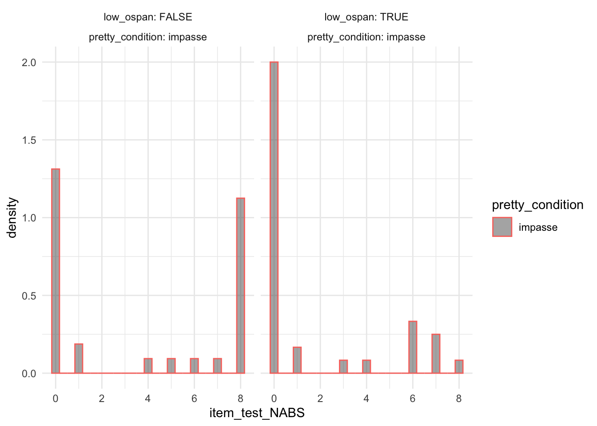
CODE
#test performance predicted by OSPAN scorem<-lm(item_test_NABS~low_ospan, data =impasse)summary(m)
Call:
lm(formula = item_test_NABS ~ low_ospan, data = impasse)
Residuals:
Min 1Q Median 3Q Max
-3.75 -1.72 -1.72 4.25 6.28
Coefficients:
Estimate Std. Error t value Pr(>|t|)
(Intercept) 3.750 0.410 9.14 8.6e-16 ***
low_ospanTRUE -2.028 0.564 -3.60 0.00045 ***
---
Signif. codes: 0 '***' 0.001 '**' 0.01 '*' 0.05 '.' 0.1 ' ' 1
Residual standard error: 3.28 on 134 degrees of freedom
Multiple R-squared: 0.0881, Adjusted R-squared: 0.0813
F-statistic: 12.9 on 1 and 134 DF, p-value: 0.000451